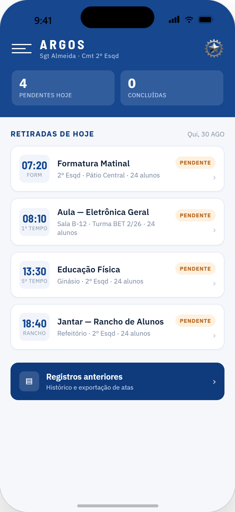
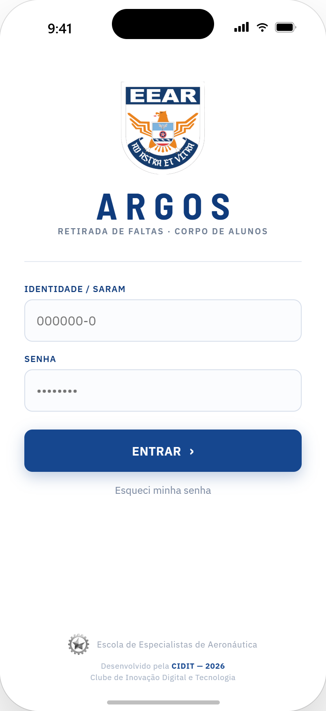

ARGOS
Sistema de Retirada de Faltas · Corpo de Alunos
Vigilância contínua do efetivo: retirada de faltas digital, justificativa de faltas em campo e histórico auditável de cada retirada — substituindo o controle manual por papeletas e o Livro do Aluno de Dia.

A origem do nome
Na mitologia grega, Argos Panoptes era o gigante coberto por centenas de olhos. Por nunca fechar todos ao mesmo tempo, exercia uma vigilância contínua, atenta e infalível.
O projeto adota o nome como símbolo da vigia constante do efetivo: nenhuma alteração ou falta passa sem o devido registro e controle.
Agilidade
A retirada acontece na formatura, pelo celular do aluno de serviço, em minutos para todo o efetivo.
Confiabilidade
O registro individual por aluno elimina erro de cômputo, dupla contagem e presença lançada por terceiros.
Transparência
Cada retirada gera protocolo, responsável identificado e histórico consultável.

Acesso por identidade militar / SARAM. Tema claro, alto contraste, uso ao ar livre.
Como o Argos funciona
Um fluxo simples, pensado para o pátio: identificar quem está fazendo a chamada, registrar o efetivo e justificar quem faltou — tudo em poucos minutos.
Escolher a retirada
Formatura, 1ª ou 2ª Jornada, Educação Física ou Pernoite — com status pendente ou enviada.
Identificar o aluno de serviço
Login individual do responsável pela chamada. Sem essa identificação, a retirada não abre.
Registrar o efetivo
Lista do esquadrão em tela, com marcação rápida por aluno e retorno imediato de duplicidade.
Registrar o motivo da falta
Alunos de Serviço, Posto Médico, Dispensados, Punição (LNC, Detenção, Prisão) ou Justificativa para apuração dos fatos.
Revisão e envio
Conferência de presentes, faltas e observações antes de assinar a chamada.
Histórico e protocolo
Cada retirada gera protocolo único, responsável identificado e histórico consultável.
Controles do registro
- Anti dupla-contagem — aluno já registrado volta como “já lançado”.
- Fora do efetivo — aluno de outro esquadrão é recusado.
- Busca por número ou nome — localização rápida na lista, mesmo em campo.
Simples de operar em qualquer condição
A marcação acontece direto na tela, sem depender de hardware extra. O toque abre direto o motivo da falta, com registro claro de exceções.
Por que o Argos existe
Papeletas de Retirada de Faltas e Livro do Aluno de Dia
Mesmo sendo reconhecida como o maior centro de formação técnica da América Latina, a EEAR ainda controla o efetivo de alunos de forma manual, por meio de Papeletas de Retirada de Faltas preenchidas nas entradas em forma e do Livro do Aluno de Dia mantido em cada esquadrão.
O Argos nasce para digitalizar esse controle: um sistema eletrônico que substitui a chamada em papel por um registro estruturado, com histórico auditável e responsável identificado em cada retirada.
Entradas em forma
1ª Jornada, 2ª Jornada, Educação Física e Pernoite.
Categorias controladas
Alunos de Serviço, Posto Médico, Dispensados e Punição (LNC, Detenção ou Prisão).
Justificativa
Toda falta fora dessas categorias recebe motivo específico, pronto para apuração dos fatos.
Próximo passo: DEF
Após consolidado nas entradas em forma, o sistema será estendido à Divisão de Ensino e Formação.